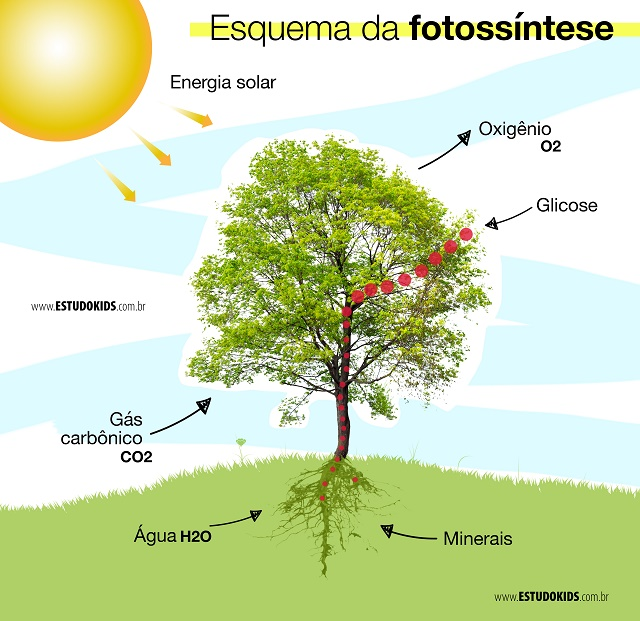

O que é a Fotossíntese?
A fotossíntese é o processo pelo qual as células vegetais convertem luz solar em energia química, utilizando água e dióxido de carbono para produzir glicose e oxigênio. Esse processo ocorre principalmente nas folhas, nas estruturas chamadas cloroplastos, que contêm clorofila, o pigmento responsável por captar a luz.
Etapas da Fotossíntese
Fase Clara
Ocorre nas membranas dos tilacoides dentro dos cloroplastos. A luz solar é absorvida pela clorofila, gerando ATP (adenosina trifosfato) e NADPH (nicotinamida adenina dinucleotídeo fosfato), que são formas de energia química. A água é dividida em oxigênio, prótons e elétrons. O oxigênio é liberado como um subproduto.
Fase Escura (ou Ciclo de Calvin)
Ocorre no estroma dos cloroplastos. O ATP e o NADPH gerados na fase clara são usados para converter dióxido de carbono em glicose. Esse processo envolve uma série de reações químicas que resultam na produção de carboidratos.
Equação Geral da Fotossíntese
6CO2 + 6H2O + luz solar → C6H12O6 + 6O2
Importância da Fotossíntese
Produz oxigênio, essencial para a respiração de muitos organismos.
Forma a base da cadeia alimentar, pois as plantas são produtoras primárias.
Contribui para a redução do dióxido de carbono na atmosfera, ajudando a combater as mudanças climáticas.